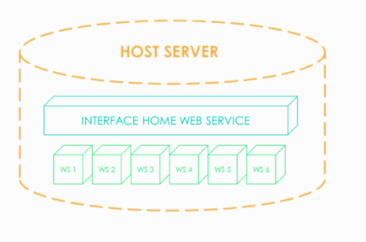
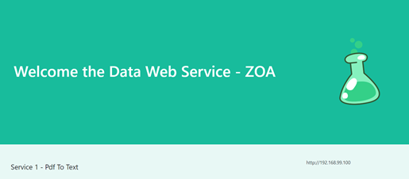

Description¶
Introduction¶
This project mix several approach : Docker & Flask WS
- Home - A dockerized Flask app to host users
- pdf2txt - Pdf file conversion to text using Apache Tika technology.
- txt2pn - Find a P/N object list in a free text.
Architecture¶
Get Started¶
Install Docker or Docker toolbox then run the containers using
docker run -d -p 5001:5001 gottavianoni/pdf2txt
docker run -d -p 5002:5002 gottavianoni/txt2pn
docker run -d -p 5000:5000 gottavianoni/home
Acces the web service with the url
http://localhost:5000 ( or 192.168.99.100:5000 if you are using Toolbox)
Host Page¶
The page should seem to
